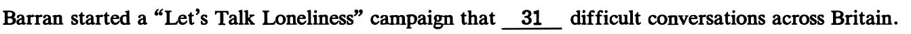

第 1 题 #
1.A. See the Pope.B. Go to Newcastle.C. Travel to Germany.D. Tour an Italian city.
大学英语四级 · questions · 2021
题号和章节目录由结构化数据生成。选项按卷面字母顺序显示；原标记保留在 JSON 中。
。2 6 四 二 、,＇，
年1 月大 学英语 级 考试真题 （ 2 Writing
Directions: For this pa,rt, you are allowed 80 minutes to write an essay titled "Is technology making people 缸y? ". The statement given below is for your reference. You should write at least竺Q words but no more than 些words. Many studies claim that computers distract people, make them lazy thinkers and even lower their work efficiency.
Part ][ Listening Comprehension (25 minutes)
Directions: In this section, you will加ar three news reports. At t加end of e ach news report , you will 加ar two or three questions. Both the news report and t加questions will be spoken only once. After you 加ar a question , you m匹t choose t加best answer from加four choices marked A), B), C) and D). T, 加nmark t加corresponding letter on Answer Sheet 1 with a single line through t加centre.
Questions 1 and 2 are based on the news report you have just heard.
2.
Questions 3 and 4 are based on the news report you have just heanl.
3.
4.
Questions 5 to 7 are based on the news report you have just heanl.
5.
6.
7.
Directions: In this section, you will hear two long conversations. At the end of each conversation, you will hear four questions. Both the conversation and the questions will be spoken only once. After you hear a question, you must choose the best answer from the four choices marked A), B), C) and D). Then mark the corresponding letter on Answer Sheet 1 with a single line through the centre.
Questions 8 to 11 are based on the conversation you have just heanl.
8.
9.
10.
11.
Questions 12 to 15 are based on the conversation you have just heanl.
13.
14.
15.
Directions: In this section , you will hear three passages . At the end of each passage , you will hear three or four questions. Both the passage and the questions will be spoken only once. After you hear a question , you must choose the best answer from the four choices marked A) , B) , C) and D) . Then mark the corresponding letter on Answer Sheet 1 with a single line through the centre.
Questions 16 to 18 are based on the passage you have just heard.
16.
17.
18.
Questions 19 to 21 are based on the passage you have just heard.
19.
20.
21.
Questions 22 to 25 are based on the pa芍吨r you have just heard.
22.
23.
24.
Part ][ Reading Comprehension (40 minutes)
Directions: In this section, there is a passage with ten blanks. You are required to select one word for each blank from a list of choices given in a word bank following the passage. Read the passage through carefully d by a letter. Please mark the corresponding 拉fore making your choices. 应ch choice in the bank is identifie letter for each item on Answer Sheet 2 with a single line through the centre. You may not use any of加 words in the bank more than once.
Social isolation poses more health risks than obesity or smoking 15 cigarettes a day, according to research published by Brigham Young University. The 26 is that loneliness is a huge, if silent, risk factor.
Loneliness affects physical health in two ways. First, it produces stress hormones that can lead to many health problems. Second, people who live alone are less likely to go to the doctor 27 , to
本页部分文字层异常，已保留原图文字区域；这些区域随窗口缩放，暂不能重新换行或复制。
exercise or to eat a healthy diet.
Public health experts in many countries are 28 how to address widespread loneliness in our society. Last year Britain even appointed a minister for loneliness. "Loneliness 29 almost every one of us at some point," its minister for loneliness Baroness Barran said. "It can lead to very serious health
30 for individuals who become isolated and disconnected. "

He is now supporting" 32 benches," which are public seating areas where people are encouraged to go and chat with one another. The minister is also一旦to stop public transportation from being cut in ways33 that leave people isolated.
More than one-fifth of adults in both the United States and Britain said in a 2018 34 that they often or always feel lonely. More than half of American adults are unmarried, and researchers have found that even among those who are married, 30% of relationships are 35 strained. A quarter of Americans now live alone, and as the song says, one is the loneliest number.
Directions: In this section, you are going to read a passage with ten statements attached to it. Each statement contai邓information given in one of the paragraphs. Identify the paragraph from which the information is derived. You·may choose a paragraph more than once. Each paragraph is marked with a letter. A心欢ir the questions by marking the corresponding letter on Answer Sheet 2.
N Numbers do not exist in all cultures. There are numberless hunter-gatherers in Amazonia, living along branches of the world's largest river tree. Instead of using words for precise quantities, these people rely exclusively on terms similar to "a few" or "some." In contrast, our own lives are governed by numbers. As you read this, you are likely aware of what time it is, how old you are, your checking account balance, your weight and so on. The exact numbers we think with impact everything in our lives.
B) But, in a historical sense, number-conscious people like us are the unusual ones. For the bulk of our species' approximately 200,000-year lifespan, we had no means of precisely representing quantities. What's more, the 7,000 or so languages that exist today vary dramatically in how they utilize numbers.
C) Speakers of anumeric, or numberless, languages offer a window into how the invention of numbers reshaped the human experience. Olltures without nwnbers, or with only one or two precise numbers, include the Munduruku and氏啦in Ar四釭血. Researchers have also studied some adults in Nicaragua who were never taught nmnber words. Without numbers, healthy human adults struggle to precisely distinguish and recall quantities as low as four. In an experiment, a researcher will place nuts into a can one at a time and then remove them one by one. The person watching is asked to signal when all the nuts have been removed. Responses suggest that anumeric people have some trouble keeping track of how many nuts remain in the can, even if there are only four or five in total.
D) This and many other experiments have led to a simple conclusion: When people do not have number words, they struggle to make quantitative distinctions that probably seem natural to someone like you or me. W血e only a small portion of the world's languages are anumeric or nearly anumeric, they demonstrate that number words are not a human universal.
E) It is worth stressing that these anumeric people are cognitively (在认知方面）normal, well-adapted to the surroundings they have dominated for centuries. As a child, I spent some time living with anumeric people, the Piraha who live along the banks of the black Maici River. Like other outsiders, I was continually impressed by their superior understanding of the ecology we shared. Yet numberless people struggle with tasks that require precise discrimination between quantities. Perhaps this should be unsurprising. After all, without counting, how can someone tell whether there are, say, seven or eight coconuts (椰子）in a tree? Such seemingly straightforward distinctions become blurry through numberless eyes.
F) This conclusion is echoed by work with anumeric children in industrialized societies. Prior to being spoon-fed number words, children can only approximately discriminate quantities beyond three. We must be handed the cognitive tools of numbers before we can consistently and easily recognize higher quantities. In fact, acquiring the exact meaning of number words is a painstaking process that takes children years. Initially, kids learn numbers much like they learn letters. They recognize that numbers are organized sequentially, but have little awareness of what each individual number means. With time, they start to understand that a given number represents a quantity greater by one than the number coming before it. This "successor principle" is part of the foundation of our numerical (数字的）cognition, but requires extensive practice to understand.
G) None of us, then, is really a "numbers person." We are not born to handle quantitative distinctions skillfully. In the absence of the cultural traditions that fill our lives with numbers from infancy, we would all struggle with even basic quantitative distinctions. Number words and their written forms transform our quantitative reasoning as they are introduced into our cognitive experience by our parents, peers and school teachers. The process seems so normal that we sometimes think of it as a natural part of growing up, but it is not. Human brains come equipped with certain quantitative instincts that are refined with age, but these instincts are very limited.
H) Compared with other mammals, our numerical instincts are not as remarkable as many assume. We even share some basic instinctual quantitative reasoning with distant non-mammalian relatives like birds. Indeed, work with some other species suggests they too can refine their quantitative thought if they are introduced to the cognitive power tools we call numbers.
I) So, how did we ever invent "unnatural" numbers in the first place? The answer is, literally, at your fingertips. The bulk of the world's languages use base-10, base-20 or base-5 number systems. That is, these smaller numbers are the basis of larger numbers. English is a base-10 or decimal (十进制的） language, as evidenced by words like 14 ("four"+ "10") and 31 ("three" x "10" +"one"). We speak a decimal language because an ancestral tongue, proto-Indo-Buropean, was decimally based. Proto-Inda European was decimally oriented because, as in so many cultures, our ancestors' hands served as the gateway to the realization that "five fingers on one hand is the same as five fingers on the other. " Such momentary thoughts were represented in words and passed down across generations. This is why the word "five" in many languages is derived from the word for "hand." Most number systems, then, are the by-product of two key factors: the human capacity for language and our inclination for focusing on our hands and fingers. This manual fixation—an indirect by-product of walking upright on two legs— has helped yield numbers in most cultures, but not all.
J) Cultures without numbers also offer insight into the cognitive influence of particular numeric traditions. Consider what time it is. Your day is ruled by minutes and seconds, but these concepts are not real in any physical sense and are nonexistent to numberless people. .Minutes and seconds are the verbal and written representations of an uncommon base-60 number system used in ancient
Mesopotamia. They reside in our minds, numerical artifacts (人工制品）that not all humans inherit conceptually.
K) Research on the language of numbers shows, more and more, that one of our species' key characteristics is tremendous linguistic (语言的）and cognitive diversity. If we are to truly understand how much our cognitive lives differ cross-culturally, we must continually explore the depths of our species' linguistic diversity.
36. It is difficult for anumeric people to keep track of the change in numbers even when the total is very small.
37. Human numerical instincts are not so superior to those of other mammals as is generally believed.
38. The author emphasizes being anumeric does not affect one's cognitive ability.
39. In the long history of mankind, humans who use numbers are a very small minority.
40. An in-depth study of differences between human languages contributes to a true understanding of cognitive differences between cultures.
41. A conclusion has been drawn from many experiments that anumeric people have a hard time distinguishing quantities.
42. Making quantitative distinctions is not an inborn skill.
43. Every aspect of our lives is affected by numbers.
44. Larger numbers are said to be built upon smaller numbers.
45. It takes great efforts for children to grasp the concept of number words.
Directions: There are 2 passages in this section. Each passage is followed by some questions or unfinished statements. For each of them there are four choices marked A), B), C) and D). You should decide on the best choice and mark the corresponding letter on Answer Sheet 2 with a single line through the centre.
Questions 46 to SO are based on the following passage.
Sugar shocked. That describes the reaction of many Americans this week following revelations that, 50 years ago, the sugar industry paid Harvard scientists for research that shifted the focus away from
What might surprise consumers is just how many present-day nutrition studies are still funded by the food industry. Nutrition scholar Marion Nestle of New York University spent a year informally tracking industry-funded studies on food. "Roughly 90% of nearly 170 studies favored the sponsor's interest," Nestle tells us. Other systematic reviews support her conclusions.
For instance, studies funded by Welch Foods--the brand behind Welch's 100% Grape Juice-found that drinking Concord grape juice daily may boost brain function. Another, funded by Qualcer Oats, concluded, as a Daily Mail story put it, that "hot oatmeal (燕麦粥） brealdast keeps you full for longer. "
Last year, The New York Times revealed how Coca七ola was funding well-known scientists and organizations promoting a message that, in the battle against weight gain, people should pay more attention to exercise and less to what they eat and drink. Coca七ola also released data detailing its funding of several medical institutions and associations between 2010 and 2015.
"It's certainly a problem that so much research in nutrition and health is funded by industry," says Bonnie Liebman, director of nutrition at the Center for Science in the Public Interest. "When the food industry pays for research, it often gets what it pays for." And what it pays for is often a pro-industry finding.
Given this environment, consumers should be skeptical (怀疑的） when reading the latest finding in nutrition science and ignore the latest study that pops up on your news feed. "Rely on health experts who've reviewed all the evidence," Liebman says, pointing to the official government Dietary Guidelines,
本页部分文字层异常，已保留原图文字区域；这些区域随窗口缩放，暂不能重新换行或复制。
which are based on reviews of hundreds of studies.
"And that expert advice remains pretty simple," says Nestle. "We know what healthy diets are-一lots of vegetables, not too much junk food, balanced calories. Everything else is really difficult to do experimentally. "

46. What did Harvard scientists do 50 years ago?
47. What does Marion Nestle say about present-day nutrition studies?
48. What did Coca-Cola-funded studies claim?
49. What does Liebman say about industry-funded research?
50. What is the author's advice to consumers?
Questions 51 to 55 are based on the following passage.
Success was once defined as being able to stay at a company for a long time and move up the corporate ladder. The goal was to reach the top, accumulate wealth and retire to a life of ease. My father is a successful senior executive. In 35 years, he worked for only three companies.
When I started my career, things were already different. If you weren't changing companies every three or four years, you simply weren't getting ahead in your career. But back then, if you were a consultant or freela砒er (自由职业者），people would wonder what was wrong with you. They would assume you had problems getting a job.
Today, consulting or freelancing for five businesses at the same time is a badge of honor. It shows how valuable an individual is. Many companies now look to these "ultimate professionals" to solve problems their full-time teams can't. Or they save money by hiring" top-tier (顶尖的）experts" only for particular projects.
Working at home or in cafes, starting businesses of their own, and even launching business ventures that eventually may fail, all indicate "initiative," "creativity," and "adaptability," which are desirable qualities in today's workplace. Most important, there is a growing recognition that people who balance
本页部分文字层异常，已保留原图文字区域；这些区域随窗口缩放，暂不能重新换行或复制。
work and play, and who work at what they are passionate about, are more focused and productive, delive中，greater value to their .clients'.
career advice.:-W血t's needed now is a marketplace platform specifically designed to bring freelancers and
creative talent. This is where they conduct business, where a sense of community reinforces the culture and values of the·gig economy (零工经济），and where success is rewarded with good reviews that encourage more business.
Slowly but surely, these platforms create a bridge between traditional enterprises and this emerging economy. Perhaps more important, as the global economy continues to比disrupted by technology and other massive change, the gig economy will itself become an engine of economic and social transformabon.
51. W匝t does the author use the example of his father to illustrate?
52. Why did people often change jobs when the author started his career?
53. What does the author say about people now working for跁veral businesses at the same time?
54. What have businesses come to recognize now?
55. What does the author say about the'gig economy?
PartN Translation (30 minutes)
s加uld write your answer on Answer Sheet 2.
壹翌(Pu'er)茶深受中国人喜爱。 最好的普洋茶产自云南的西双版纳(Xishuangbanna), 那里的气候和环境为普洋茶树的生长提供了最佳条件。 普洋茶颜色较深，味道与其他许多茶截然不同。 普洋茶垫(brew)的时间越长越有味道。许多爱喝茶的人尤其喜欢其独特的香味和口感。普洋茶含有多种有